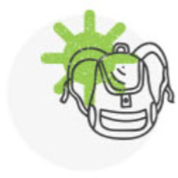

DISCOVER A HIDDEN PARADISE

Our Tours
Discover with EcoTour Barahona, your specialist in Ecotorism a new face of the Dominican Republic, more human, more authentic!
We have artistically designed unique excursion for you, accompained by professional and passionate local guides who will show you the best of this part of the country.
ALL CATEGORIES

DAY-TRIPS
MULTI-DAY TRIPS
PRIVATE-TOURS
Featured Travel Experience
Garden of Eden
price per audit
Departing from:Barahona
◴ 5-6hours